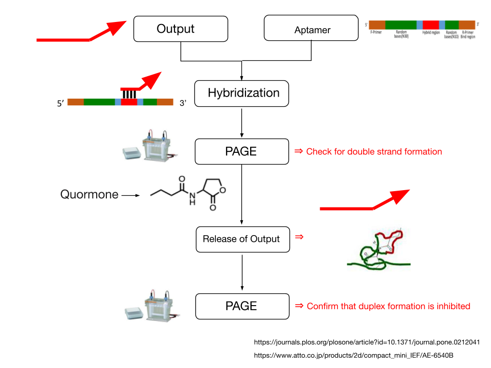
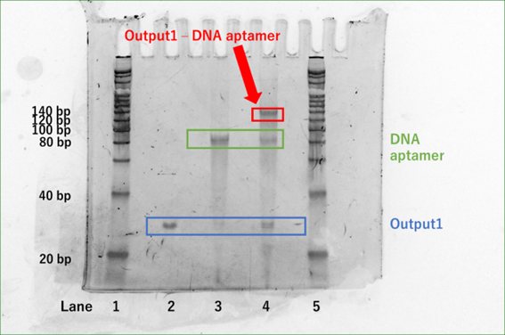

Experiment
Experimental Items
The purpose of this experiment is to create double-stranded DNA that reacts specifically to C4-HSL.
1. Hybridization of DNA aptamer (Pool99) + Output 1
【Method】
Hybridization of DNA aptamer (Pool99) + Output 1
First, DNA Aptamer (Pool99) and Output 1 were prepared to 600 nM with 1 × TAE/Mg2+. After preparation, DNA Aptamer (Pool99)(20 μL) was denatured at 95˚C for 5 min and cooled to 4˚C using a PCR thermal cycler. DNA Aptamer (Pool99) (20 μL) and Output 1 (20 μL) were then mixed in a 1 : 1 ratio, and the sample was set in a PCR thermal cycler at 53˚C for 30 min, followed by 48˚C for at least 4hr. The mixture was then held at 43˚C for 30 min and 38˚C for 4 hr.1)
Confirmation of double strand formation by electrophoresis (PAGE)
Polyacrylamide gels were prepared by mixing 10 W/ V. % Acrylamide Bis Mixed Solution (29 : 1) 10 mL and initiator (APS 100 µL + TEMED 10 µL). Then, electrophoresis was performed at 150 V, 15 mA, 45 min using 0.5 × TBE buffer.
【Results and Discussion】
Fig.1 shows the results of Experiment 1.
Fig.1 PAGE analysis of Experiment 1
(lane 1: Ladder (20 bp, 7 µL)、lane 2: Output 1 (300 nM, 7.5 µL), lane 3: DNA Aptamer (Pool99) (300 nM, 7.5 µL), lane 4: Output1 - DNA Aptamer (Pool99) (300 nM, 7.5 µL), lane 5: Ladder (20 bp, 7 µL))
Fig.1 shows that a single peak between 20 bp and 40 bp (peak 1) appeared in lane 2. Also, a single peak between 80bp and 100 bp (peak 2) appeared in lane 3. In lane 4, three peaks have appeared, peak 1, peak 2, and a peak between 120 bp and 140 bp (peak 3). Peak 1 and 2 in lane 4 are Output 1(32bp) and DNA Aptamer (Pool99) (99bp) that were not hybridized. Since peak 3 is the sum of peak 1 and peak 2, we confirmed the success of hybridization of Output 1 and DNA Aptamer (Pool99) .
2. Dissociation of Aptamer sensor (Output 1 - DNA Aptamer (Pool99)) by C4-HSL
【Method】
Dissociation of Aptamer sensor (DNA Aptamer (Pool99) + Output1)
C4-HSL (1 mg) was prepared to 1 mM using DMSO. 600 nM Aptamer sensor (Output1 - DNA Aptamer (Pool99)) and 1 mM C4-HSL were mixed 1 : 1 and reacted for 1 hr.
Confirmation of double-strand dissociation by electrophoresis
The polyacrylamide gel was prepared under the same conditions as those described earlier for electrophoresis. Then, electrophoresis was performed at 150 V, 15 mA, 45 min using 0.5 × TBE buffer.
【Results and Discussion】
Fig.2 shows the results of Experiment 2
Fig.2 PAGE analysis of Experiment 2
(lane 1: Ladder (20 bp, 7 µL), lane 2: 300 nM Output 1 (7.5 µL), lane 3: 300 nM DNA Aptamer (Pool99) (7.5 µL), lane 4: 300 nM Aptamer sensor (Output1 - DNA Aptamer (Pool99)) (7.5 µL), lane 5: 600 nM Aptamer sensor (Output1 - DNA Aptamer (Pool99)) + 1 mM C4-HSL, lane 6: Ladder (20 bp, 7 μL))
Comparing Lane 4 and Lane 5, it appears that the 120bp-140bp peak seen in Lane 4 has disappeared in Lane 5. Also, the Output1 (32 bp) and DNA Aptamer (Pool99) peaks of lane 5 seem darker compared to lane 4. Therefore, we inferred that under the existence of C4-HSL (quormone), the hybridized double-stranded DNA (Aptamer sensor) dissolved into two components.
Conclusion
At first, we attempted double-strand formation of Output 1 and DNA Aptamer (Pool99) to create the Aptamer sensor by using hybridization buffer.
However, the salt concentration of the hybridization buffer was so high that double-strand formation could not be confirmed by electrophoresis (PAGE).
When we changed the buffer to 1×TAE/Mg2+, the double-strand formation was confirmed by electrophoresis (PAGE).
In the next experiment, we confirmed the release of Output 1 from the Aptamer sensor when we added C4-HSL (quorumone).
In conclusion, we confirmed that the Aptamer sensor (DNA aptamer - output1 (131 bp)) works as designed by the experiments.